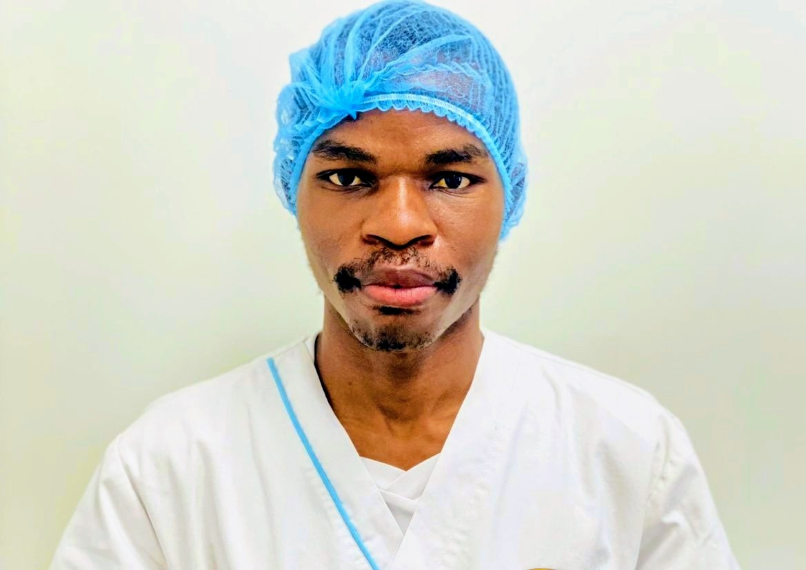

Paciência Pascoal. Desenvolvedor web, tenho experiência em criação de sites reponsivos.
Vai nas redes sociais💡.
- Formado no ramo da saúde.
- Dedicado ao trabalho.
- Tempos livres gosto estudar e pesquisar
- Manjo bem com tecnologia.
- Gosto de assistir ao animes e doramas.
- Manjo com HTML, CSS e + linguagens.
- Experiente já a um ano com programacão.
*Actualmente continuo neste Ministério.